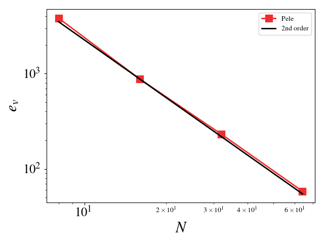
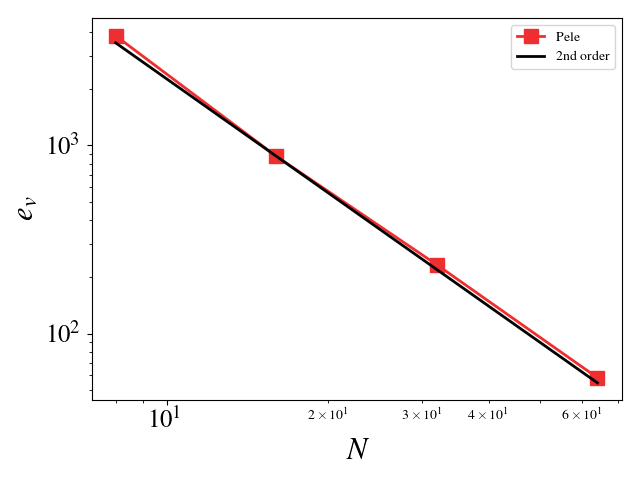

Verification of PeleC
Verification of PeleC uses MASA and auto-differention tools to implement the Method of Manufactured Solutions into PeleC.
The \(L_2\) error norm for a quantity \(s\) is defined as
where \(s^h\) is the numerical solution, \(s^*\) is the exact solution, and \(N_e\) is the number of elements. \(N\), used below, is the number of element on a side of the cube (\(N_e = N^3\)).
Building and running MMS
The user must first build and install MASA. This can be done from source or using Spack.
Building MASA from source
The user must build both Metaphysicl and MASA. After defining
METAPHYSICL_ROOT_DIR and MASA_ROOT_DIR:
$ git clone https://github.com/roystgnr/MetaPhysicL
$ ./bootstrap
$ ./configure --prefix=$METAPHYSICL_ROOT_DIR
$ make
$ make install
$ git clone https://github.com/manufactured-solutions/MASA
$ ./bootstrap
$ ./configure METAPHYSICL_DIR=$METAPHYSICL_ROOT_DIR --prefix=$MASA_ROOT_DIR --enable-python-interfaces
$ make
$ make check
$ make install
Building MASA using Spack
Assuming the user has Spack configured for their system, building and installing MASA is as easy as:
$ spack install masa
Linking MASA to PeleC and running
For the MMS problem setup, one must specify the install location for
MASA in the MASA_HOME variable. This can be done on the command
line either as:
$ export MASA_HOME=$MASA_ROOT_DIR
or, when compiling PeleC,
$ make -j 16 DIM=3 USE_MPI=TRUE MASA_HOME=$MASA_ROOT_DIR
where MASA_ROOT_DIR is the MASA install location. If using Spack
and after loading the MASA module, the MASA_ROOT_DIR will be
automatically populated.
After building the PeleC MMS executable, one can perform an MMS convergence study to demonstrate formal accuracy of the numerical implementation. Results of several MMS tests are detailed below.
Running the full MMS suite
The full MMS suite can be executed through the PeleCRegressionTesting test suite:
$ ./verify-pelec.sh
Testing the Euler equations
We can turn off diffusion in Pele and set the coefficients for those terms to zero in MASA to test the hydrodynamic update. A convergence study shows second order for Pele’s treatment of the hydrodynamic source. The initial solution was initialized to the exact solution and 100 pseudo-time steps were taken (fixed to \(10^{-8}\)). Periodic boundaries are imposed everywhere.
Density \(L_2\) error norm:
{kind=link}
Velocity (u, v, w) \(L_2\) error norm:


{kind=link}
Pressure \(L_2\) error norm:
{kind=link}
Testing the compressible Navier-Stokes equations
For these cases, the Reynolds, Mach, and Prandtl numbers were set to 1 to ensure that the different physics were equally important (viscosity, conductivity, and bulk viscosity are non-zero and determined by the appropriate non-dimensional number). The CFL condition was fixed to 0.1 to ensure that the predictor-corrector time stepping method found a solution to the system of equations. The initial solution was initialized to the exact solution. Periodic boundaries are imposed everywhere. A convergence study shows second order for Pele’s treatment of the compressible Navier-Stokes equations.
Initial difficulties in getting the solution to reach steady state for the Euler equations (no diffusion) were overcome by incorporating diffusion effects and reducing the CFL number. Setting the Reynolds, Mach, and Prandtl to 1, and taking small time steps ensures that the pseudo-time integration (predictor/corrector) does not oscillate wildly and fail to find the steady-state solution. The iterative error was monitored and the final time (identical for all simulations) was chosen so that the iterative error was small, \(\mathcal{O}(10^{6})\) smaller than the discretization error. The iterative error never reaches machine zero. This is most likely due to the way in which the predictor/correct pseudo-time integration uses time steps based on the wave speeds and viscosity and not adjusting the time step based on the Jacobian of the system. An actual steady-state solver (rather than a pseudo-time integration to steady state) would be more efficient and more robust at finding the steady state solution of the MMS system of equations. While this would test the spatial discretization scheme, an MMS simulation with a steady state solver would fail to test the temporal discretization scheme.
Density \(L_2\) error norm:

Velocity (u, v, w) \(L_2\) error norm:
 

{kind=link}
{kind=link}
Pressure \(L_2\) error norm:

Testing the adaptive mesh refinement algorithm
This setup is similar to the previous one except for the fact that this test uses the AMR framework. There are two grid refinement levels: a coarse grid covering the entire domain and a fine grid on top of this one covering 50% of the domain. The grids are fixed in time, i.e. they do not adapt based on the solution value. This test ensures that the algorithms dealing with the grid interfaces, time integration of the different levels, and level synchronization preserve the second order accuracy of the code.
Magnitude of velocity and mesh:
{kind=link}
Velocity \(L_2\) error norm:

Testing the constant Smagorinsky Large Eddy Simulation model
This setup is identical to the MMS study for the compressible Navier-Stokes equations. The Large Eddy Simulation (LES) constants, \(C_s\) and \(C_I\), were chosen such that the turbulent eddy viscosity was comparable to the viscosity, i.e. \(\frac{\mu_t}{\mu} = \mathcal{O}(1)\). Since the model scales with the mesh spacing, \(C_s\) and \(C_I\) were scaled inversely with the mesh spacing for the mesh refinement studies. For example, \(C_s\) is set to 2 for the \(8^3\) mesh and set to 4 for the \(16^3\) mesh (for \(C_I\), it is 1 and 4, respectively). A convergence study shows second order for Pele’s treatment of the compressible Navier-Stokes equations with the constant Smagorinsky Large Eddy Simulation model.
Density \(L_2\) error norm:
{kind=link}
Velocity (u, v, w) \(L_2\) error norm:
{kind=link}
{kind=link}
{kind=link}
Pressure \(L_2\) error norm:
{kind=link}
Conservation and Isothermal Boundaries
A simple test cass labeled MassCons is used to verify mass and energy conservation for all major numerical schemes used in PeleC (MOL without slopes, MOL with slopes, Godunov PLM, Godunov PPM). A python script is also run for all applicable test cases without inflows, outflows, or forcing, to ensure conservation during regression testing to ensure the conservation is maintained. The results shown below demonstrate the machine-precision level conservation of mass and energy for all numerical schemes. The case is arbitrary flow in a box with different types of boundaries (SlipWall, NoSlipWall, UserBC, including isothermal options). Note energy is conserved for the isothermal case without hydro turned on because of symmetry in the boundary conditions, but is not conserved for the case with hydro because inclusion of hydrodynamic effects breaks the symmetry.
Mass Conservation:
Energy Conservation:
This case does not include EB, but the conservation script is run for some of the EB test cases (EB-C9, EB-C11, EB-C12). However, it should be noted that the testing suite does not cover cases where EBs intersect the domain boundary at a sharp angle.
The case with isothermal walls and no hydro allows the convergence of the treatment of diffusion and isothermal boundaries to be verified without using MMS. This case has an initial temperature of 700 K in the 2D domain and temperatures of 600 K, 800 K, 650 K, and 750 K for the low x, high x, low y, and high y boundaries, respectively. Verification is performed at an early time such that thermal diffusion from the various boundaries have not imacted each other yet. Therefore, the solutions are compared against the analytical result for diffusion into a semi-infinite medium:
where x is the distance from the wall.
x temperature profile:
y temperature profile:
Convergence: